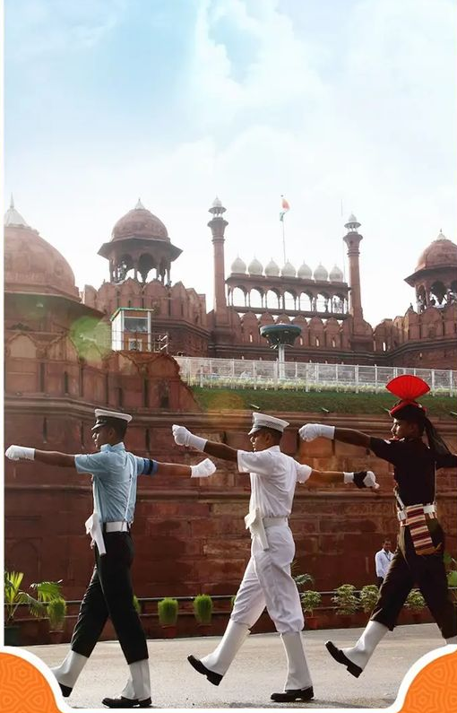

INDIAN ARMY

- The Indian Army is the land-based branch and the largest component of the Indian Armed Forces.
- The President of India is the Supreme Commander of the Indian Army, and its professional head is the
Chief of Army Staff (COAS), who is a four-star general.
- officers have been conferred with the rank of field marshal, a five-star rank, which is a ceremonial
position of great honour.
- The Indian Army was formed in 1895 alongside the long established presidency armies of the East India
Company, which too were absorbed into it in 1903.
- The princely states had their own armies,which were merged into the national army after independence.
- units an regiments of the Indian Army have diverse histories and have participated in several battles
and campaigns around the world, earning many battle and theatre honours before and after Independence.
- Indian Army is operationally and geographically divided into seven
commands, with the basic field formation being a division.
- Below the
division level are permanent regiments that are responsible for their own
recruiting and training. The army is an all-volunteer force and comprises
more than 80% of the country's active defence personnel.
- It is the largest standing army in the world, with 1,237,117 active
troops
and
960,000 reserve troops. The army has embarked on an infantry
modernisation program known as Futuristic Infantry Soldier As a System
(F-INSAS), and is also upgrading and acquiring new assets for its
armoured, artillery, and aviation branches.
CLICK TO KNOW MORE ABOUT THE INDIAN ARMY